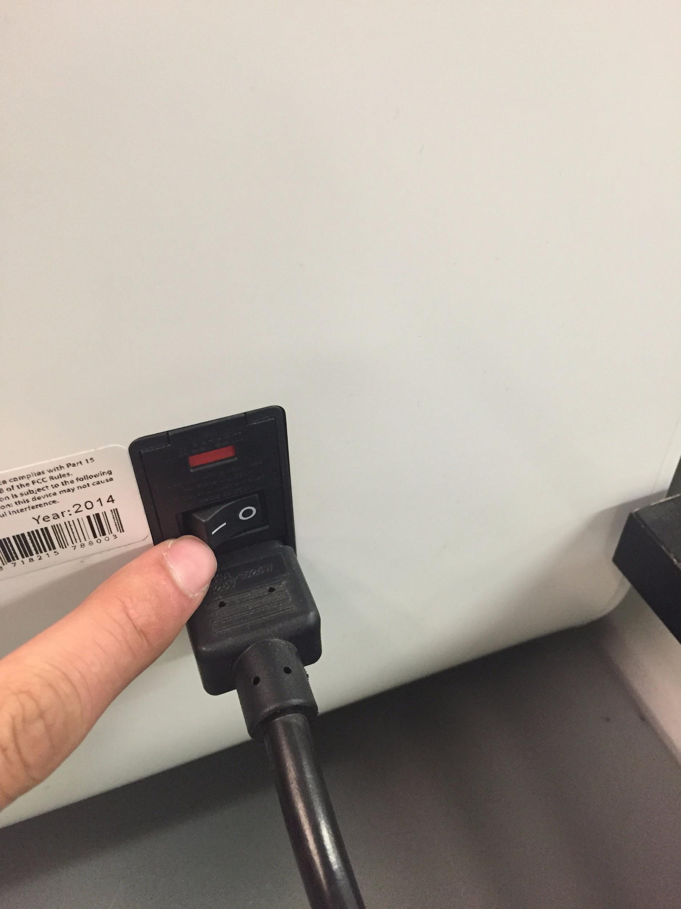
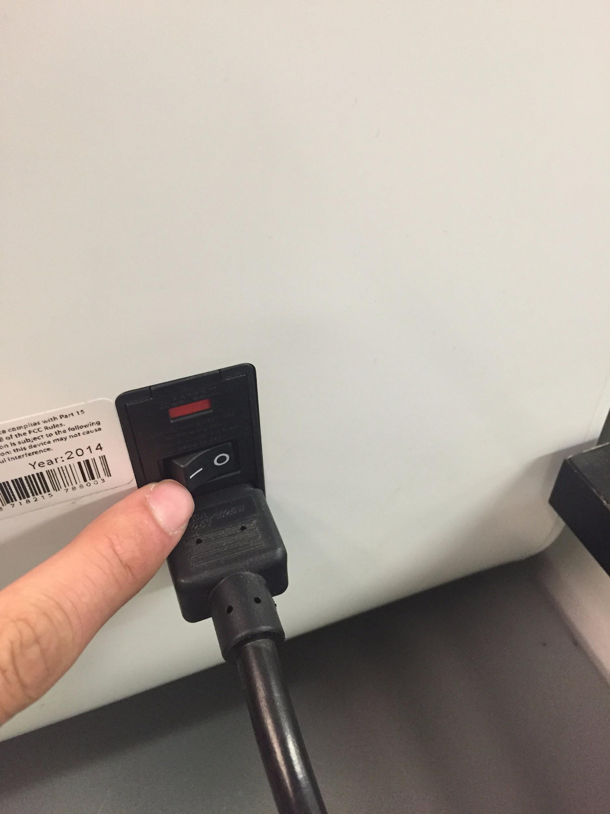

Tweaking the Printer Settings
In the cubepro software you will need to set the printer configurations for your project. For this application we will use the settings shown above.
Click here for the next step.
In the cubepro software you will need to set the printer configurations for your project. For this application we will use the settings shown above.
Click here for the next step.